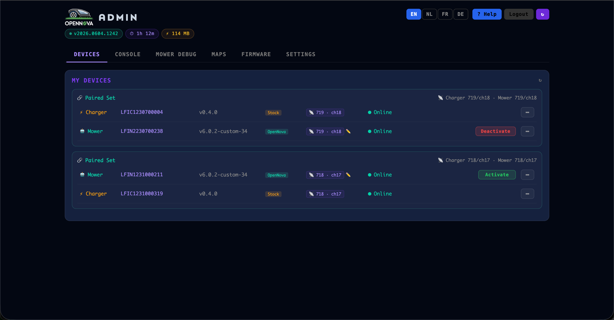
The admin panel is the OpenNova server's built-in web console, served at
http://<your-server>/admin. From one page you manage every paired
mower and charger, watch the live server log, pull diagnostics off a mower without SSH,
view and back up maps, push firmware over the air, and configure networking,
certificates and your account. Log in with the e-mail and password you set during
first-time setup. Six tabs run across the top: Devices, Console, Mower Debug, Maps,
Firmware and Settings.
The Devices tab lists every mower and charger paired with your account, grouped into paired sets. Each row shows the serial number, device type, firmware version with a Stock or OpenNova badge, the LoRa address/channel the pair uses, and a live Online / offline pill driven by MQTT status reports. The Activate / Deactivate button chooses which set is the active pair. This is the only tab most users ever need.
When a newer server image is available on Docker Hub, a banner appears across the top of the panel. It shows the running version, the available version and when it was pushed; How to update explains the upgrade, or you can dismiss it. This is how you know the local server itself — not the mower — has an update waiting.
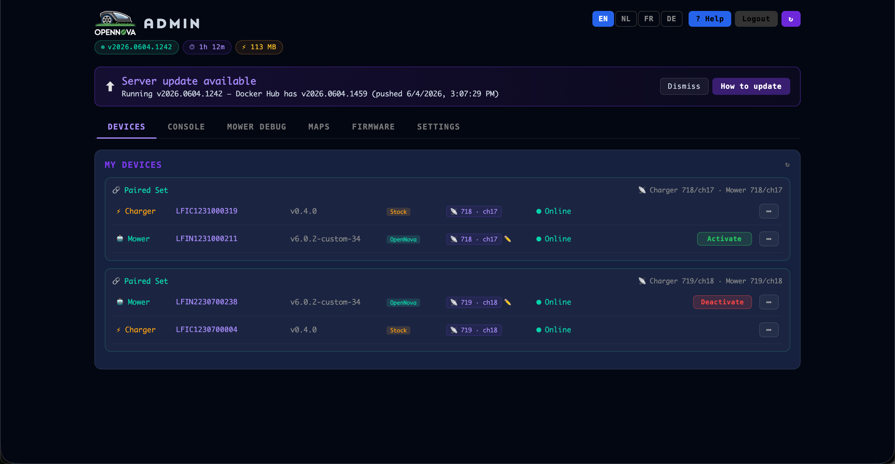
The Console tab streams the server's live log — the same lines you'd see in
docker logs — colour-coded by source. Toggle the Mower / Charger /
App / HTTP / System filters to focus on what matters, search by serial number,
and use Clear, Copy and Auto-scroll. When something misbehaves,
open this tab, reproduce the problem, and copy the exact lines into a bug report.
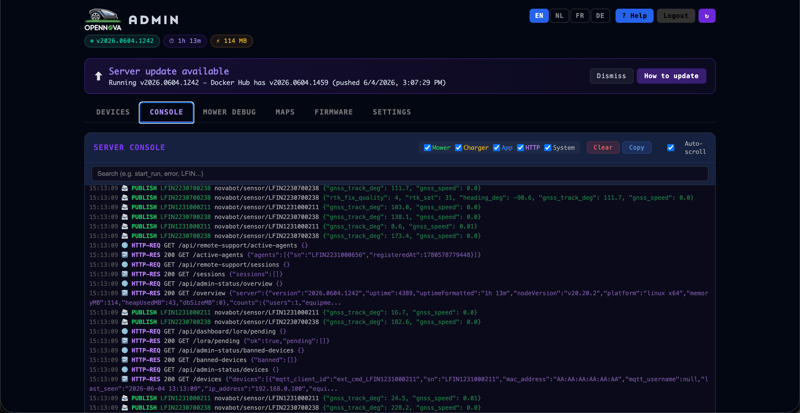
Mower Debug fetches live logs and diagnostics straight from the mower over MQTT —
no SSH needed (it requires custom firmware ≥ v6.0.2-custom-24). Pick a
mower, then use List log sources, Path files info or System info.
The Fetch log lines panel grabs a chosen log (for example mqtt_error)
with a line limit, severity level and grep filter, and a live client-side filter plus
Errors only / Warns toggles narrow the result further.
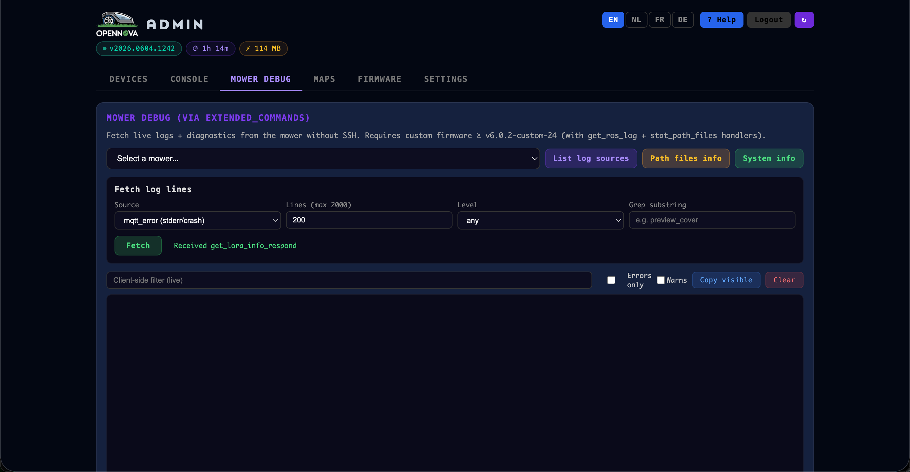
The Maps tab visualises every map stored on the server. The Map Viewer draws the work-area boundary (green), no-go obstacles (red, with their name and area), the charging dock, and the unicom channel that links a zone to the dock. Pick a mower from the dropdown; Calibrate Polygon Offset nudges the polygon if the saved map and the live GPS frame drift apart.
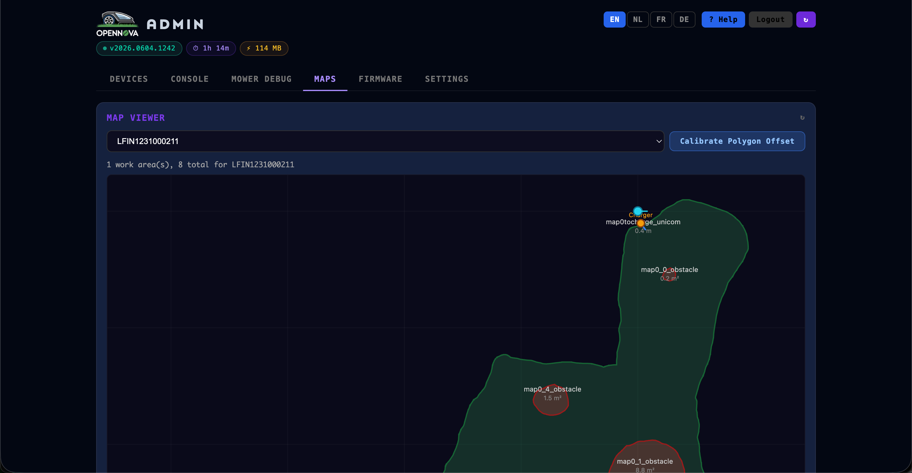
Below the viewer is the full map list (each entry deletable) and the
Portable Map Bundle tools — the recommended way to back up and move a lawn.
Export bundle saves the polygons plus a complete rasterized map as a portable
.novabotmap file; restoring pushes it back to a mower verbatim (after
which you re-anchor in the app). The server also keeps the last 20 auto-snapshots
per mower, and Walker Maps lists survey bundles uploaded by the RTK walker.
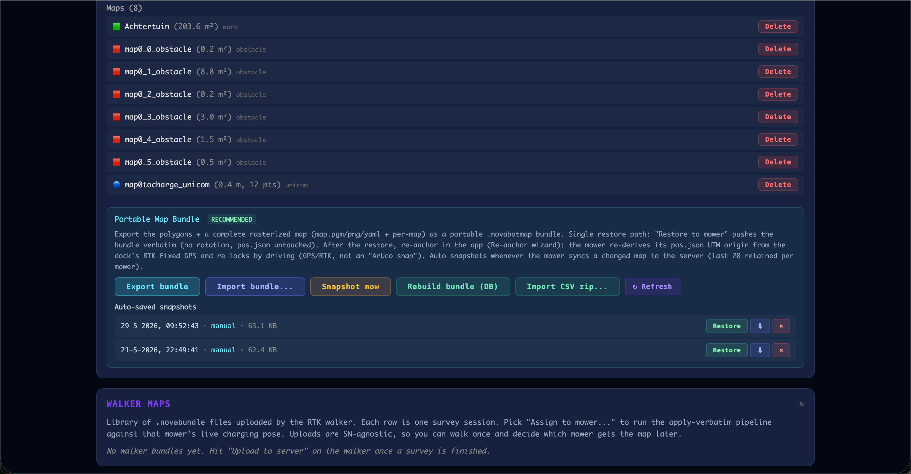
The Firmware tab manages over-the-air updates for both mowers and chargers. Available Firmware lists every version the server knows about with its device type, MD5 and changelog; drop new files into the server's firmware folder and they appear here automatically. Under Update Device, pick a target and a version and click Start Update — progress then streams in from the mower over MQTT.
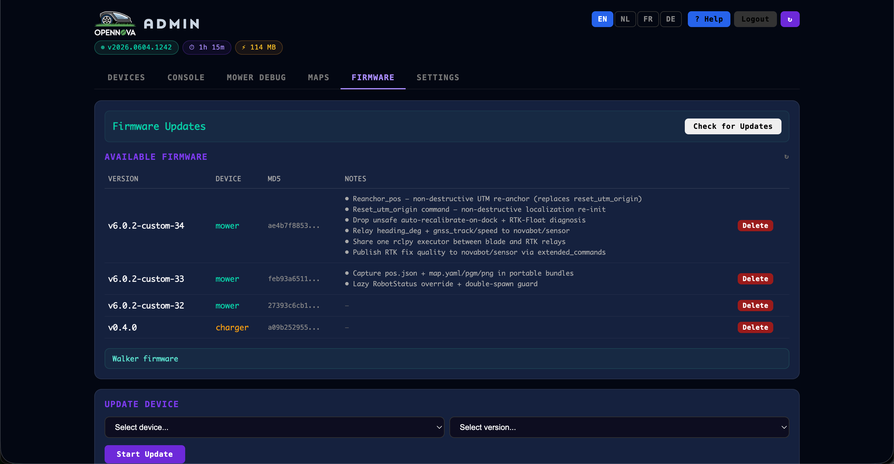
The Settings tab opens with your Account summary — e-mail, admin role, registered/seen device counts and map count. The Support OpenNova card offers tip options (it's free and open-source), and Resources & Help links the User Guide & Wiki, source code, issue tracker, Docker image, releases and discussions.
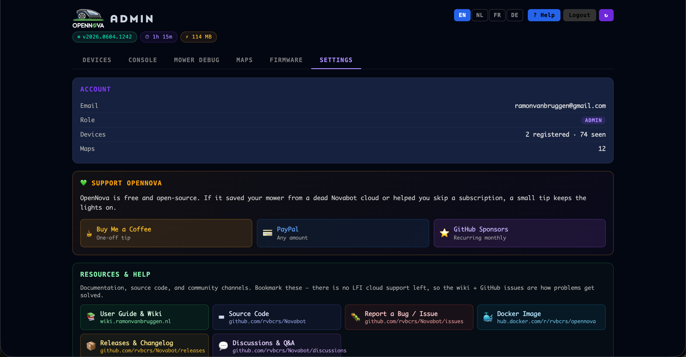
Network & DNS confirms that the app and mower resolve the cloud
hostnames to your local server instead of the internet — each domain shows the IP it
points to, with a built-in dnsmasq server you can start if you don't run
your own. System Tools can soft-restart the mDNS advertiser (the
opennova.local name). Certificate Setup walks you through installing
the OpenNova CA on your phone so the official app trusts the local HTTPS server.
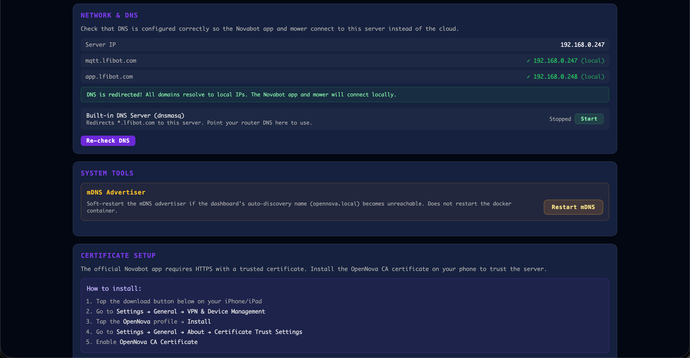
Cloud Import pulls your devices in from the original Novabot cloud using your app credentials, for a smooth migration. The Remote Debug cards let you share your MQTT logs in real time with someone who can help, or receive logs from users who are sharing theirs; Remote Support — Operator connects you to an approval-gated session for a user who asked for help.
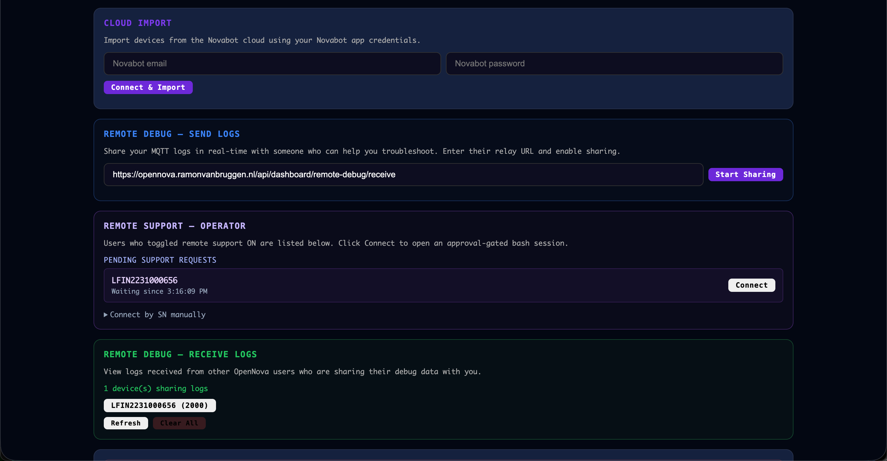
At the very bottom sits the Danger Zone. Factory Reset permanently deletes your account, all devices, maps and settings and starts fresh — there is no undo, which is why it's deliberately tucked away last. A manual "recalibrate charging pose" debug action lives just above it for advanced use.
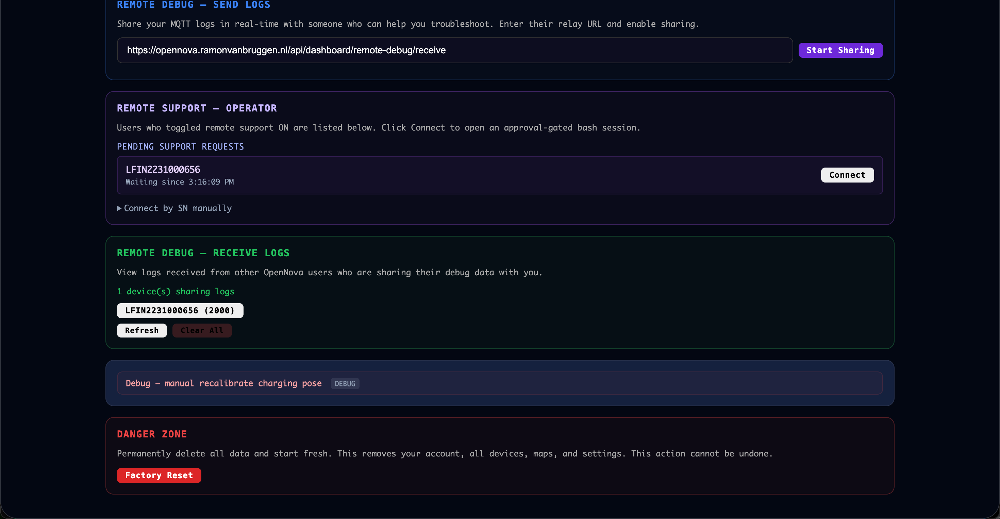